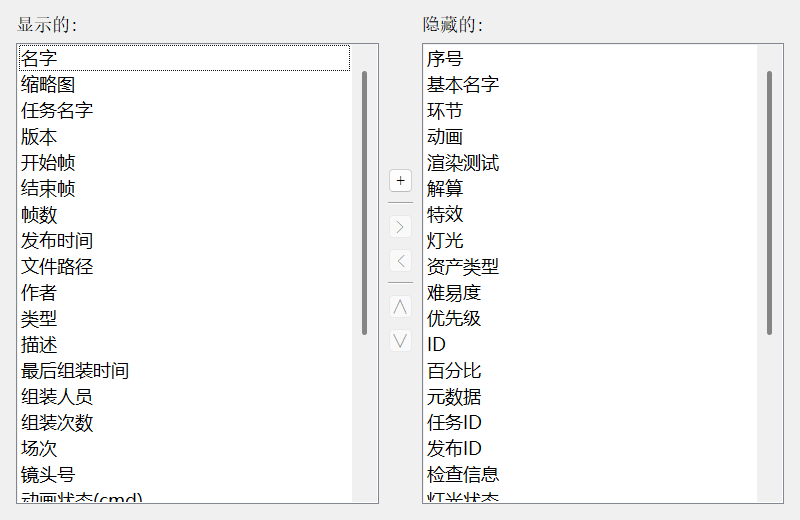

表头列配置¶
主视图的列标题支持显示、隐藏、排序、增加自定义列，以及配置列显示名、单元格参数和
Python 计算函数。表头操作会受到当前账户的 user_level 权限限制。
表头右键菜单¶
在主视图列标题上点击右键，可以使用：
- 将列调整为合适大小：只调整当前列。
- 将所有列调整为合适大小：重新计算全部列宽。
- 可排序：打开或关闭当前视图排序，设置会被记住。
- 隐藏当前列：把当前列移出显示列表。
- 显示所有隐藏列：重新显示被隐藏的列。
- 列：展开列显示/隐藏菜单；其末尾的「更多」打开完整列管理窗口。
- 复制列标识：复制内部列名，例如
user_yxc____7。 - 添加列..：输入显示名后创建自定义列，内部标识自动生成。
- 编辑列..：编辑当前列的名字、参数和 Python 函数。
- 表达式..：旧版入口，当前版本只读取并提示表达式，没有可靠写回配置；
新配置请使用
app_args或 Python 列函数。
Warning
「隐藏当前列」只会把列移出当前显示列表，不等于删除列配置。需要恢复时使用 「列」菜单或列管理窗口重新显示。
列管理¶
打开 表头右键 → 列 → 更多，会显示列管理窗口：

| 区域或按钮 | 作用 |
|---|---|
| 显示的 | 当前主视图中可见的列，顺序就是表格中的顺序 |
| 隐藏的 | 已注册但没有显示的列 |
+ |
新建自定义列 |
> |
把选中的显示列移到隐藏列表 |
< |
把选中的隐藏列移回显示列表 |
∧ / ∨ |
调整选中显示列的先后顺序 |
| 双击列名 | 打开该列的详细编辑窗口 |
显示状态和顺序会立即保存。新添加的列通常先进入隐藏列表，需要移到「显示的」后才会出现在主视图。
详细编辑字段¶
详细编辑窗口来自 menuedit 配置，当前字段如下：
| 界面字段 | 配置键 | 用途 |
|---|---|---|
| 名字 | labels |
表头显示文字，可以随时改名，不影响内部列标识 |
| sign | 表头 real_label |
内部列标识，只读；脚本和 app_args 使用这个值作为键 |
| 参数 | app_args |
单元格输入参数，保存为字符串 |
| apps | app_type |
可选的用途说明或应用标识字符串 |
| Python | python_command |
根据当前行计算列值的 Python 函数 |
Note
当前表头代码不会仅凭 apps 字段自动过滤 DCC。列是否显示由列管理中的显示/隐藏状态决定；
apps 供插件或项目脚本按需解释。
点击 OK 后只保存当前列；点击 Cancel 放弃本次修改。
单元格参数 app_args¶
app_args 决定双击单元格时使用什么输入控件。详细格式和示例见
自定义单元格输入。
同一个 app_args 还可以用 render_type 指定平时的显示方式：
render_type |
显示方式 |
|---|---|
progressbar |
进度条 |
button |
按钮样式 |
编辑控件和显示方式分开配置。例如：
行高较高时可以用 max_height 限制进度条或按钮的最大显示高度，控件会在单元格内垂直居中。
button 会读取单元格 role 8 的背景色作为按钮底色，读取 role 9 的前景色作为文字色；
未设置文字色时会自动选择高对比度颜色。
目前内置类型包括：
data_type |
输入方式 |
|---|---|
list |
下拉选择，value_list 提供选项 |
float / double |
浮点数输入框 |
int / integer |
整数输入框 |
datetime |
日期时间输入 |
date |
日期输入 |
time |
时间输入 |
没有配置或没有注册的类型会继续使用原来的 itemDelegate。
app_args 字段同时接受标准 JSON 和 Python 字典字面量。下拉选项可以直接携带 role 数据：
{
"data_type": "list",
"value_list": [
{0: "完成", 311: [1, [[0.5, 1, 0.5], 20]]},
{0: "等待", 311: [1, [[0.5, 1, 1], 20]]},
],
}
其中：
0是单元格显示文字。311是 XP 现有的自定义图标绘制角色。- 字典会完整交给
item.set_data()，所以图标、颜色等角色可以一起生效。
Python 计算列¶
Python 字段中的函数必须使用 main(row) 形式，并返回该单元格要显示的值：
上面的函数从名称中取场次。也可以读取同一行的其他列：
保存后会重新编译列函数并刷新相关列。带 Python 函数的自定义列属于计算列，不按普通可编辑列
写回单元格数据；需要人工输入的值应放在普通的自定义列并通过 app_args 配置输入控件。
配置文件¶
列配置按用户、按视图分别保存，路径模式为：
当前 xp_demo 的 shot 视图示例：
主要结构：
{
"items": ["root", "icon", "name", "user_yxc____7"],
"labels": {
"user_yxc____7": "解算状态"
},
"app_args": {
"user_yxc____7": "{\"data_type\": \"list\", \"value_list\": [...]}"
},
"app_type": {},
"python_command": {},
"modify_user": {},
"modify_time": {}
}
说明：
items决定当前视图显示哪些列以及顺序。labels保存显示名。app_args的值是字符串，不是直接嵌在配置里的对象。python_command保存 Python 函数源码。modify_user/modify_time记录各列最后修改信息。
Warning
优先通过界面修改配置。程序运行时以内存配置为准，直接改文件后如果没有重新加载， 可能被下一次保存覆盖；手工修改前应先关闭对应视图或备份配置文件。
相关脚本接口¶
loader = xm.views.shot.loader()
config = loader.user_config
config.datas["labels"]["user_yxc____7"] = "解算状态"
config.datas["app_args"]["user_yxc____7"] = app_args_text
config.datas["python_command"]["user_yxc____7"] = python_func_text
config.save_datas("user_yxc____7")
save_datas(column_name) 只保存指定列相关数据；save() 保存当前用户配置的全部列数据。